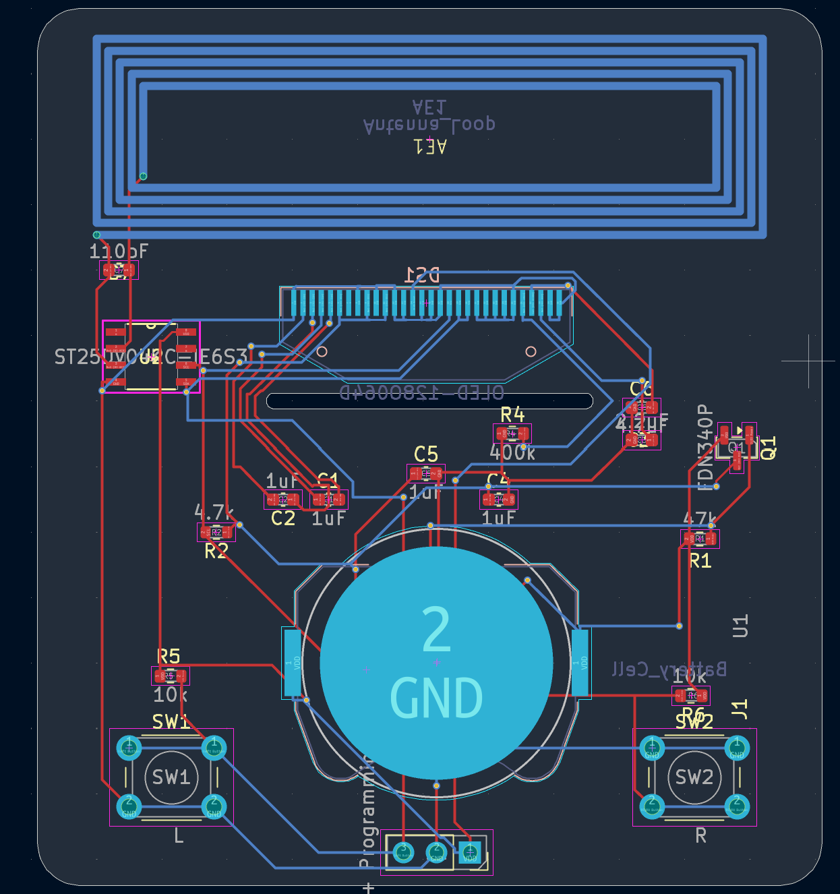

How I built the card
Everything from the first schematic to the finished board was done in KiCad.
-
Schematic
I started in KiCad's schematic editor. A CH32V003 microcontroller runs the board, and an ST25DV04KC NFC tag handles the part your phone talks to.
Schematic screenshot -
Board layout
I put the loop antenna across the top and the coin cell at the bottom, then fit the OLED and everything else in between. The two buttons, L and R, sit in the bottom corners.

The finished layout. Red is top copper and blue is bottom copper. -
NFC antenna
The antenna is a loop drawn straight into the copper. A 110 pF capacitor tunes it to the 13.56 MHz field a phone puts out, and the ST25DV stores the link to this site.
-
Routing and vias
It's a two-layer board, routed by hand. Vias carry signals between the top and bottom copper wherever two paths need to cross.
3D view from KiCad -
Fabrication and assembly
I exported the Gerbers and had the boards made by [fab house]. [How the parts got soldered on]
Bare boards from the fab -
Firmware
The CH32V003 drives the OLED and reads the two buttons. I flash it through the three-pin programming header at the bottom of the board. [Language, toolchain, what the buttons do]
Card running with the OLED on
Specs
- Microcontroller
- WCH CH32V003 (RISC-V)
- NFC tag
- ST25DV04KC
- Antenna
- Copper loop, 110 pF tuning cap
- Display
- 128×64 OLED
- Controls
- 2 buttons
- Power
- Coin cell [type]
- Programming
- 3-pin header
- Layers
- 2
- Board size
- TBD
- Design tool
- KiCad
Photos
- Photo
Front - Photo
Back - Photo or short video
Tapping it with a phone